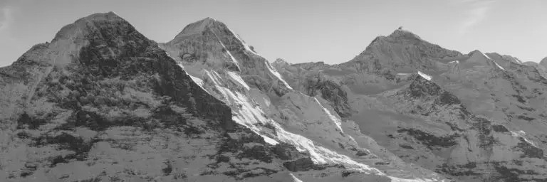

Caminatas guiadas en los Alpes suizos para hispanohablantes. Vivas en Suiza o vengas de visita — aquí la montaña se disfruta sin barreras de idioma.
Da igual si llevas años en Suiza o si acabas de aterrizar. La montaña te espera.
Rutas curadas para diferentes niveles. Todas guiadas por Santiago, en español, con grupos pequeños.
Llevo años viviendo en Suiza y descubrí algo: los Alpes son extraordinarios, pero para un hispanohablante la barrera del idioma convierte la montaña en algo lejano. Clas Tours nació para cambiar eso. Actualmente en formación como Wanderleiter — guía de senderismo certificado — para ofrecerte rutas hasta T3 en verano y WT2 en invierno, siempre en español, siempre con seguridad primero.
"Llevaba dos años en Suiza sin animarme a hacer senderismo. Con Santiago fue todo diferente — nos explicó cada detalle en español, el ritmo fue perfecto y la vista desde la cresta fue algo que no voy a olvidar."
Dinos qué ruta te llama, cuándo puedes y cuántos vienen. Te respondemos en menos de 24 horas.
Sin compromiso · Respuesta en menos de 24h